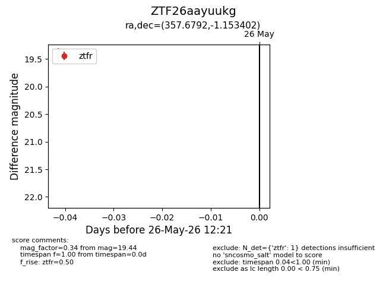
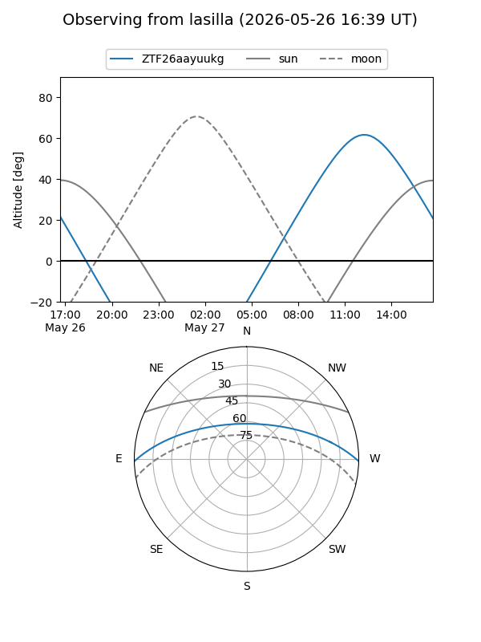
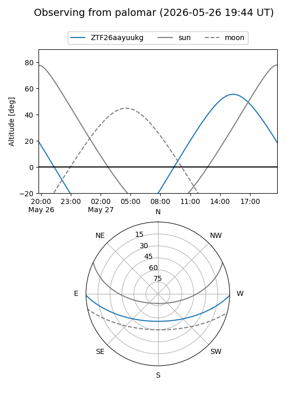

ZTF26aayuukg
Target ZTF26aayuukg at 2026-05-26 12:24
Aliases and brokers:
lsst-FINK: link
lsst-Lasair: link
lsst-ALeRCE: link
ztf-FINK: link
ztf-Lasair: link
ztf-ALeRCE: link
alt names
ZTF26aayuukg (ztf,fink_ztf)
Coordinates:
equatorial (ra, dec) = 357.6792,-1.15340
equatorial (HMS+DMS) = 23:50:43.02,-01:09:12.25
galactic (l, b) = (91.1212,-60.21992)
Flags:
Photometry:
last ztfr=19.44
1 ztfr detections
Lightcurve

Visibility


Additional plots